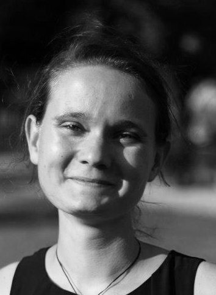
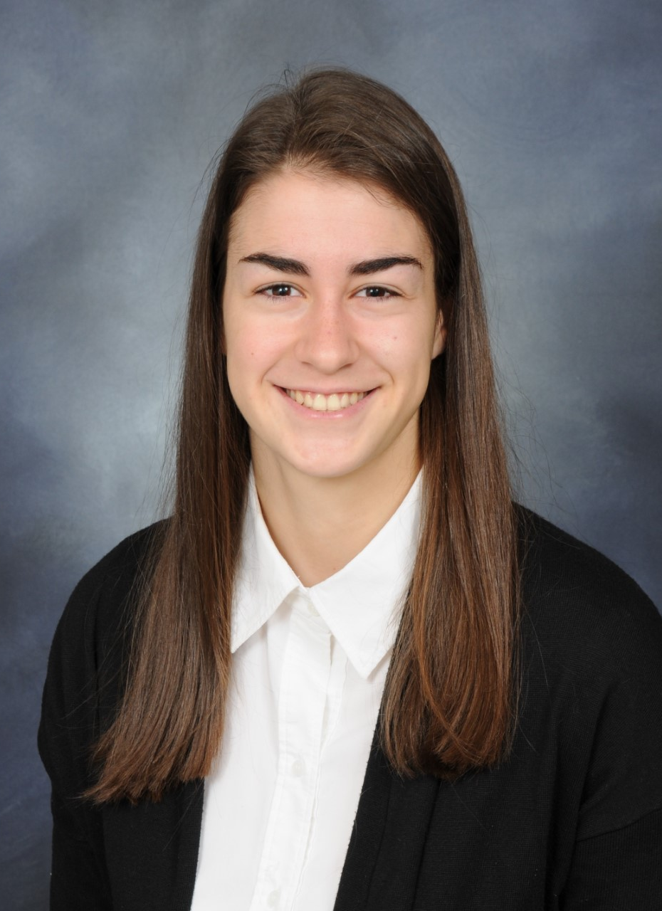
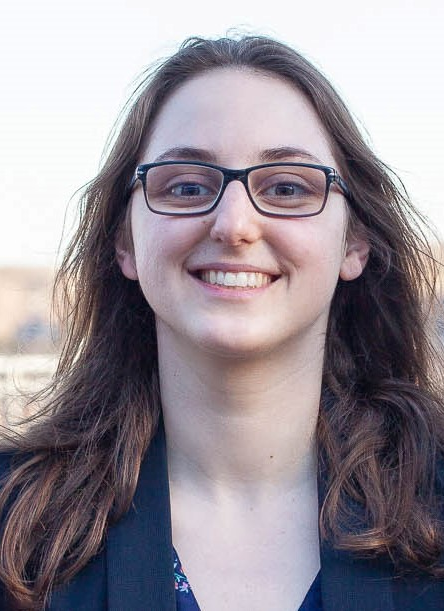

Meet the members of FLC-lab

Flavie Lavoie-Cardinal
I am interested in developing new microscopy techniques to study synaptic structure in function in living neurons. I work in developing transdisciplinary solutions combining machine learning approaches and super-resolution microscopy to characterize brain structures and dynamics at the nanoscales.
Postdoctoral Researcher

Theresa Wiesner
Coming from cancer research with focus on high throughput screening for drug development in the early years of my bachelor, I got fascinated during an internship with functional assays such as field recordings to study neuronal cell behaviour. I got hooked on doing my master in bio-photonics to learn functional imaging. During my PhD I combined functional assays, super-resolution imaging and computational tools to quantitatively assess and explore synaptic protein organization and remodeling due to synaptic plasticity. Being a scientist for me is not a job, but a lifestyle in which I can be continuously curious and explore across fields, be it from neuroscience, photonics to machine learning. In another life, I would be a diplomat who writes fiction books on the side.
PhD Students

Anthony Bilodeau
Anthony is a Ph. D. student in Biophotonics at CERVO brain research center under the supervision of Audrey Durand and Flavie Lavoie-Cardinal. His Ph. D. project consist in building a super-resolution microscope that will be able to adapt to the sample using reinforcement learning. During his master, Anthony developed weakly-supervised techniques to facilitate the analysis of microscopy images.

Catherine Bouchard
After a bachelor's degree in engineering physics, I'm pursuing my studies in the field of machine learning to extend my knowledge to new methods applied to subjects I was already passionate about, such as photonics and life science. My project focuses specifically on the application of deep neural networks for algorithmic super-resolution of fluorescence microscopy images; one of many applications where artificial intelligence has the potential to explode the potential for discovery by offering an alternative or enhancement to complex and expensive physical methods.

Andréanne Deschênes
My PhD project consists in designing a multimodal super-resolution microscope which we will use to study how proteins reorganize in neurons when the strength of their connections are altered by activity. We also aim to use this microscope to investigate the influence of diet on the permeability of the gut.
Master's Students
Jean-Michel Bellavance
EN
Renaud Bernatchez
EN
Vincent Boily
EN
Antoine Girard
EN
Albert Michaud-Gagnon
EN
Antoine Séverin Ollier
EN

Benoît Turcotte
The objective of my project is to use reinforcement learning to learn an optimal imaging scheme that would allow to image Ca2+ signaling events by maximizing resolution while minimizing photobleaching. The training will be done in simulation, which means we will also study how well an optimal policy learned in simulation transfers to real life, and how we can further fine tune it.

Owen Ferguson
Parkinson’s disease affects more than 10 million people worldwide, and I’m interested in the mechanisms that lead to the death of dopamine-producing neurons in the disease. I am using stem cells from human patients to create neurons with Parkinson’s disease traits and I am using super-resolution microscopy to observe the differences between the mitochondria of healthy people and Parkinson’s disease patients.
Undergrad Students
Alexandre Boulay
EN
Mariame Coulibaly
EN
Laurence-Taïsha Fontaine
EN
Philippe Gagnon
EN
William Leclerc
EN
Marc-Antoine Plourde
EN
Zoe Zhuang
EN
Research Assistants - Institute for Intelligence and Data

Gabriel Leclerc
I apply artificial intelligence techniques on incredible biological data acquired with even more incredible microscopes. My fields of interest are broad, but not limited, to big data technologies, mathematics, information technology, astronomy, agriculture. And if I’m not sitting behind my laptop, I can be found behind my piano, on my motorcycle, lost in the mountains, in my kayak, running. Cheers!